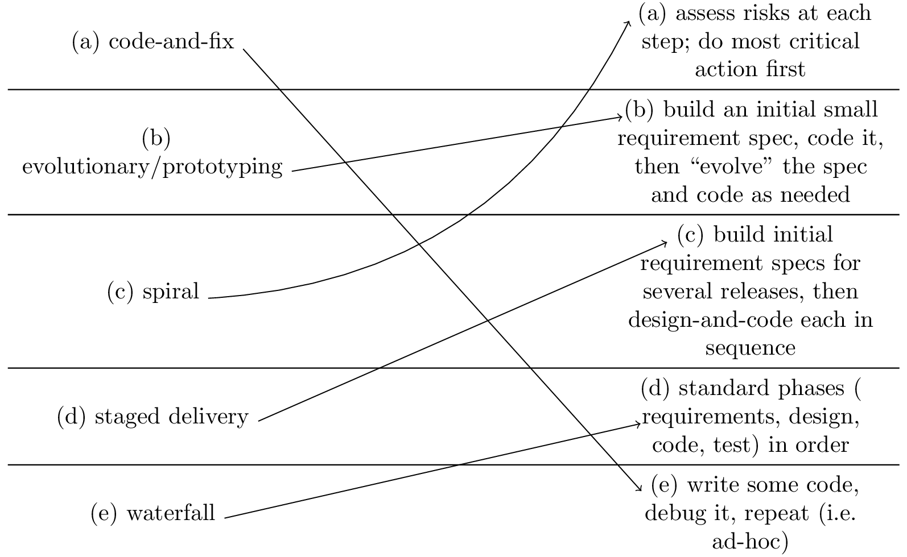

\documentclass{standalone}
\usepackage{tikz}
\usetikzlibrary{tikzmark}
\usepackage{booktabs}
\usepackage{amssymb} % For more math
\usepackage{amsmath}
\usepackage{tabularx}
% no hyphens
\tolerance=1
\emergencystretch=\maxdimen
\hyphenpenalty=10000
\hbadness=10000
\begin{document}
% \begin{tabular}{cc}
% 14\tikzmark{a} & 78 \\
% 71\tikzmark{b} & \tikzmark{c}93 \\
% \end{tabular} \newline
\newcolumntype{L}{>{\centering \arraybackslash}m{4cm}}
\begin{tabular}{L L L}
(a) code-and-fix \tikzmark{a1} & & \tikzmark{a2} (a) assess risks at each step; do most critical
action first \\ \midrule
(b) evolutionary/prototyping \tikzmark{b1} & & \tikzmark{b2}(b) build an initial small requirement
spec, code it, then ``evolve'' the spec and code as
needed \\ \midrule
(c) spiral \tikzmark{c1} & & \tikzmark{c2} (c) build initial requirement specs for several releases,
then design-and-code each in sequence \\ \midrule
(d) staged delivery \tikzmark{d1} & & (d) standard phases ( \tikzmark{d2}requirements, design, code,
test) in order \\ \midrule
(e) waterfall \tikzmark{e1} & & \tikzmark{e2} (e) write some code, debug it, repeat (i.e.
ad-hoc)
\end{tabular}
\begin{tikzpicture}[overlay, remember picture, yshift=.25\baselineskip, shorten >=.5pt, shorten <=.5pt]
% \draw [->] ({pic cs:a1}) [bend left] to ({pic cs:e2});
\draw [->] ({pic cs:a1}) -- ({pic cs:e2});
\draw [->] ({pic cs:c1}) [bend right] to ({pic cs:a2});
\draw [->] ([yshift=.75pt]{pic cs:e1}) -- ({pic cs:d2});
\draw [->] ([yshift=.75pt]{pic cs:b1}) -- ({pic cs:b2});
\draw [->] ([yshift=.75pt]{pic cs:d1}) -- ({pic cs:c2});
\end{tikzpicture}
\end{document}Created by David Li